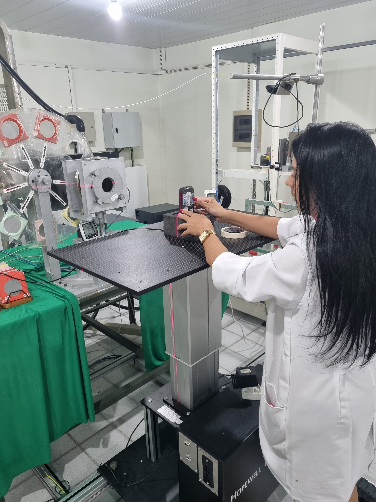
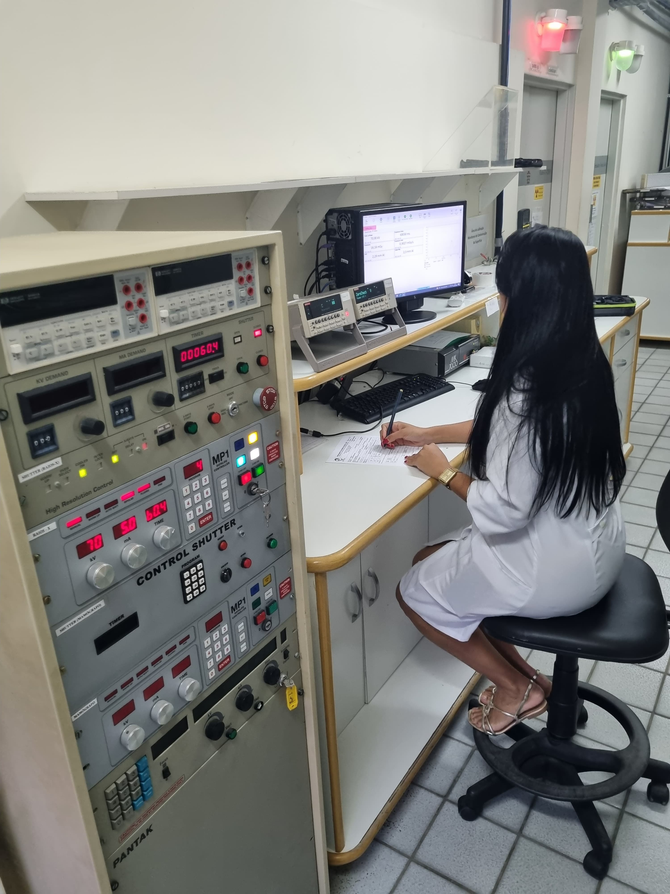

Início / O grupo / Ensino
Ensino
Formação de recursos humanos na graduação, na pós-graduação e em cursos de extensão.

Pós-graduação

Os pesquisadores do grupo atuam junto ao Programa de Pós-Graduação em Tecnologias Energéticas e Nucleares (PROTEN) na orientação de alunos de mestrado e doutorado.
Disciplinas ministradas
- Dosimetria clínica
- Eletrônica para instrumentação nuclear
- Instrumentação nuclear I e II
- Física radiológica
- Proteção radiológica I e II
- Técnicas luminescentes
- Técnicas luminescentes aplicadas à datação
- Tópicos especiais em dosimetria
- Tópicos especiais em instrumentação nuclear
Graduação

O grupo atua junto aos cursos de graduação da UFPE em Ciências Biomédicas, Física, Química, Medicina e Engenharia Biomédica, oferecendo disciplinas optativas.
Disciplinas oferecidas
- Circuitos elétricos
- Física nuclear
- Introdução à proteção radiológica
- Introdução à teoria do controle
- Radiações ionizantes e suas aplicações
- Técnicas de medidas nucleares
Alunos da graduação também desenvolvem iniciação científica com os pesquisadores do grupo e realizam monografias de final de curso.
Cursos de extensão

O grupo realiza cursos de proteção radiológica para técnicos de nível médio e superior das áreas de radiodiagnóstico, e prepara engenheiros e profissionais de nível superior que querem fazer o exame de supervisor de proteção radiológica da Comissão Nacional de Energia Nuclear (CNEN).
Também há cursos para as Vigilâncias Sanitárias e para profissionais de radiologia, para disseminar o conhecimento em controle da qualidade em radiodiagnóstico e medicina nuclear.